Контури відновлення. Міжпростір
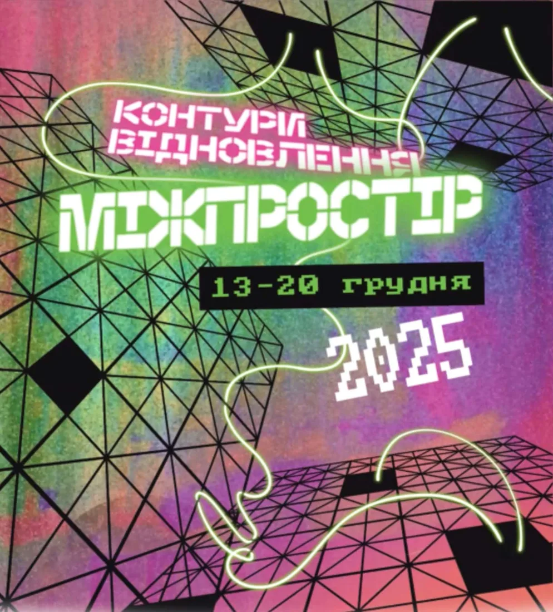
«Контури відновлення. Міжпростір» — перший у Полтаві фестиваль сучасного цифрового мистецтва, створений як простір взаємодії сучасного мистецтва, цифрових технологій, культури та суспільного досвіду війни.
Фестиваль досліджував можливості мистецтва говорити про пам'ять, втрату, трансформацію та відновлення через цифрові й міждисциплінарні практики.
Його концепція ґрунтувалася на ідеї, що навіть у часи невизначеності та руйнування люди здатні створювати нові зв'язки, сенси й простори взаємодії.
Відео · Контури відновлення. Міжпростір
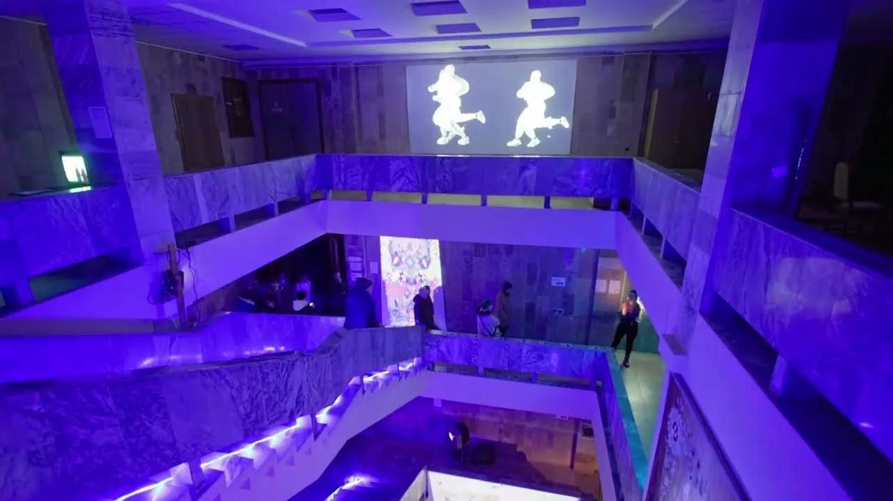
Контури відновлення. Міжпростір — відеоYouTube ↗Галерея
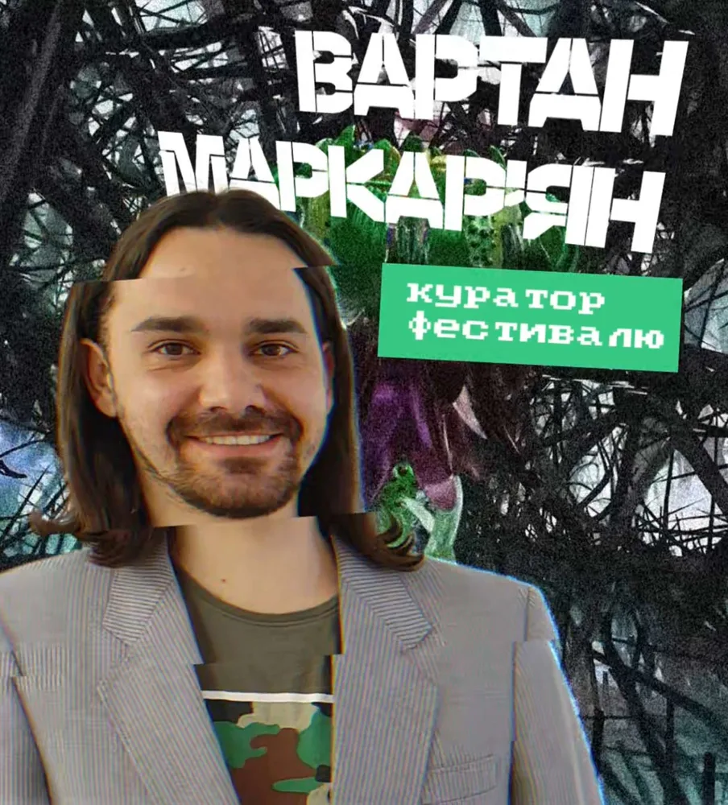
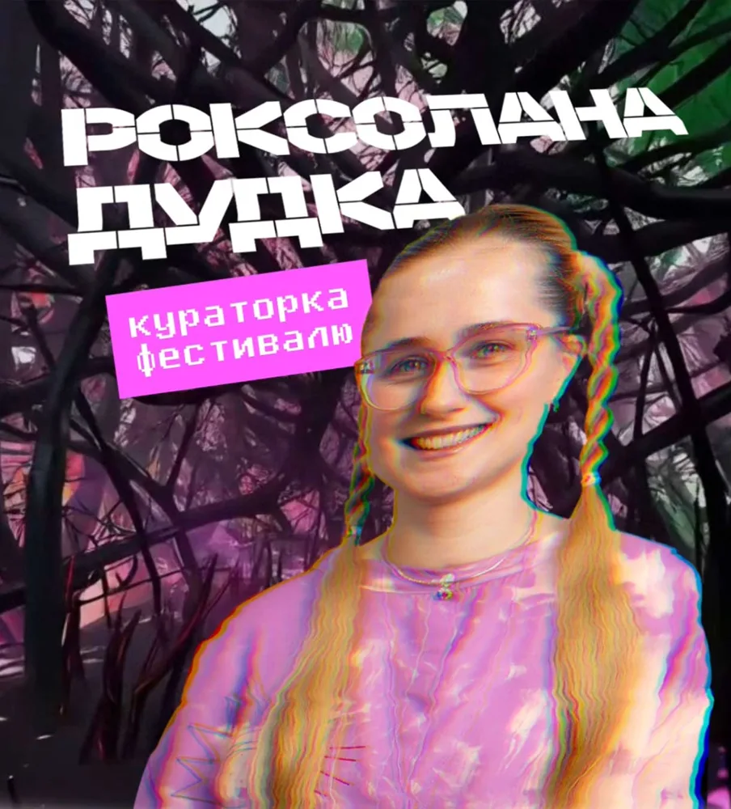
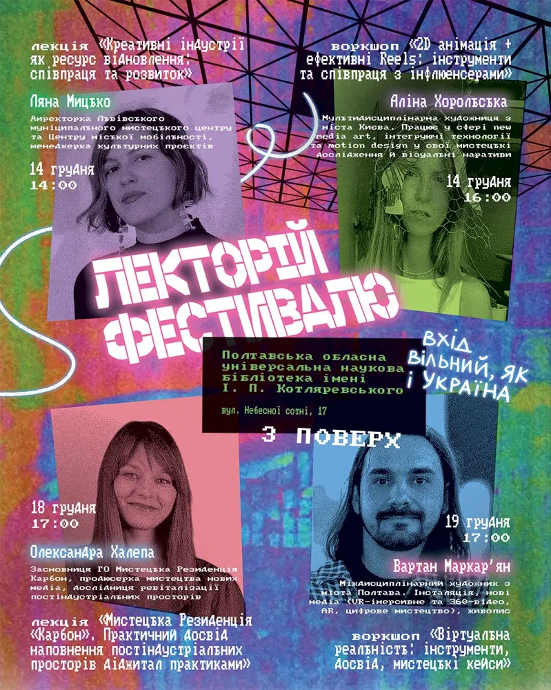
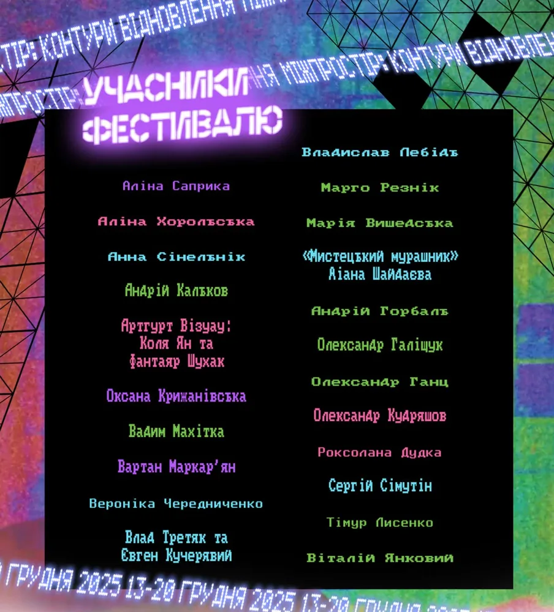
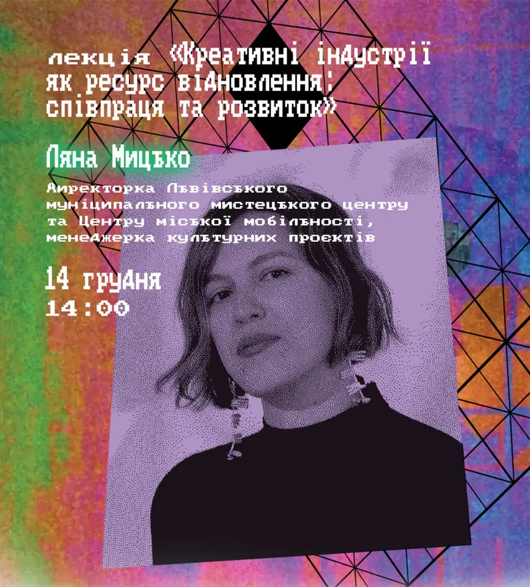
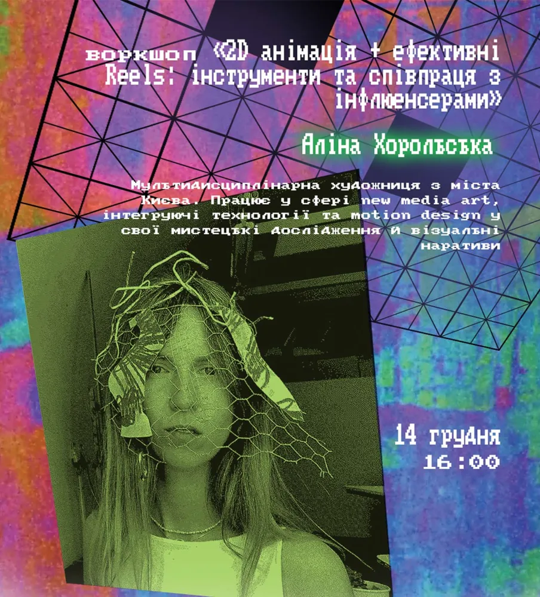
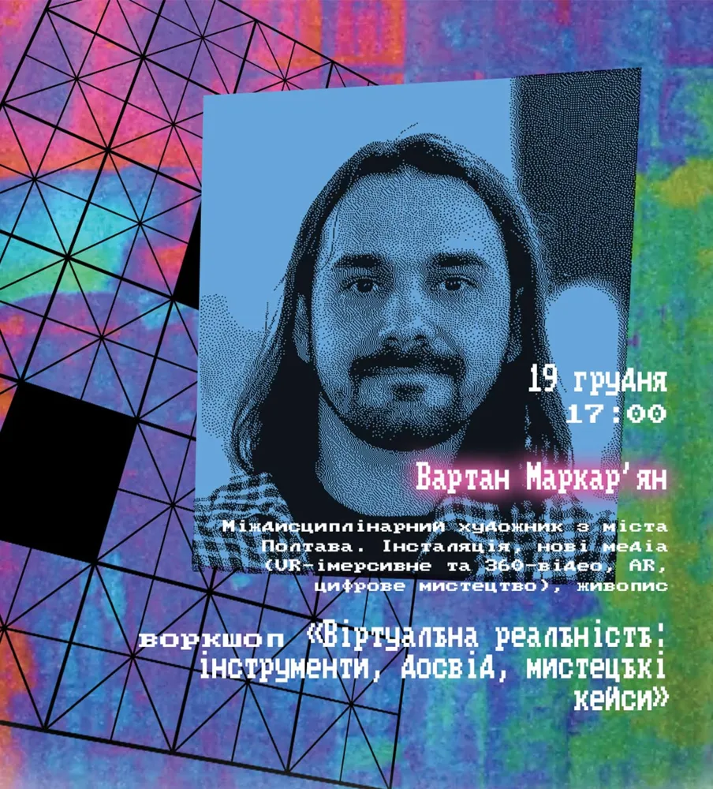
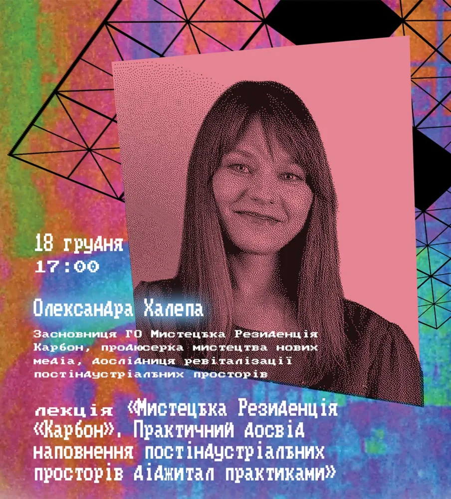
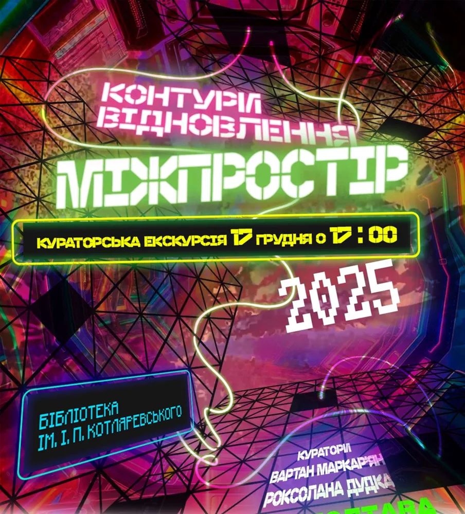
Концепція та підхід
Назва фестивалю відображає два взаємопов'язані поняття.
«Контури відновлення» — пошук нових форм осмислення досвіду війни, пам'яті та змін, які переживає суспільство.
«Міжпростір» — територія взаємодії між фізичним і цифровим середовищами, мистецтвом і технологіями, особистим досвідом та колективною пам'яттю.
Фестиваль об'єднав різні художні практики, у яких цифрові технології стали не лише засобом створення мистецьких робіт, а й інструментом дослідження сучасної реальності.
Фестиваль в умовах блекауту
Однією з визначальних особливостей фестивалю стали умови його проведення.
Подія відбулася під час повного блекауту в Полтаві. Виставкові та освітні активності розгорнулися на п'яти поверхах обласної бібліотеки.
Відсутність звичного освітлення та електропостачання стала частиною контексту фестивалю. Замість скасування події команда продовжила роботу, створивши простір для мистецтва, зустрічей та взаємодії.
У темряві люди створюють світло.
Ця ідея стала одним із ключових символічних вимірів фестивалю.
Програма
Фестиваль поєднав виставкову, освітню та комунікаційну програми. Серед представлених форматів:
До участі долучилися українські та міжнародні діджитал митці й культурні діячі.
Фестиваль створив можливість для знайомства локальної аудиторії із сучасними цифровими мистецькими практиками та професійного обміну між представниками різних культурних середовищ.
Організація та підтримка
Фестиваль реалізувала ГО «Креативна область Мислення» за підтримки NOVA United у межах програми субгрантової підтримки громадських організацій Полтави.
Для організації це стало важливим досвідом залучення грантових ресурсів, культурного продюсування та створення масштабної міждисциплінарної події в регіоні.
Значення для міста
«Контури відновлення. Міжпростір» став прецедентом представлення сучасного цифрового мистецтва в Полтаві у фестивальному форматі.
Проєкт розширив можливості локального культурного середовища, створив простір для взаємодії митців з різних міст і представив цифрове мистецтво як повноцінну частину сучасного культурного процесу.
Для ГО «Креативна область Мислення» фестиваль став важливим етапом розвитку мистецьких і міждисциплінарних практик, а також основою для подальших культурних ініціатив, зокрема фестивалю «МЕТАНОЯ» у 2026 році.
«Контури відновлення. Міжпростір» — про здатність створювати нові сенси навіть тоді, коли навколо темрява.
Інші проєкти ГО «Креативна область мислення»